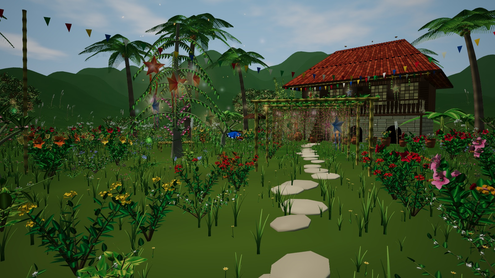
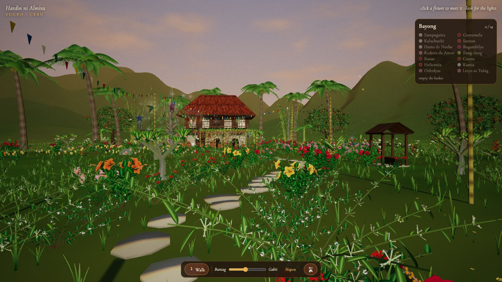
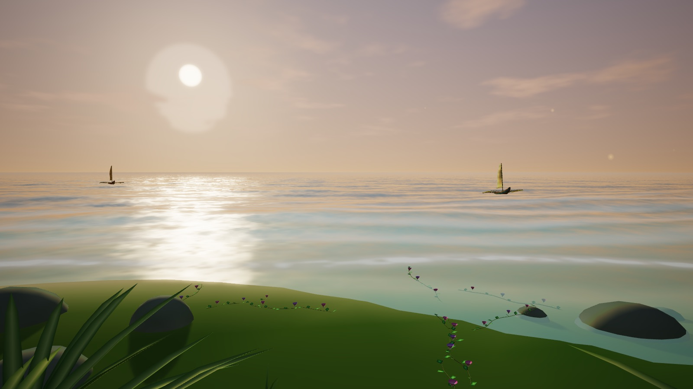
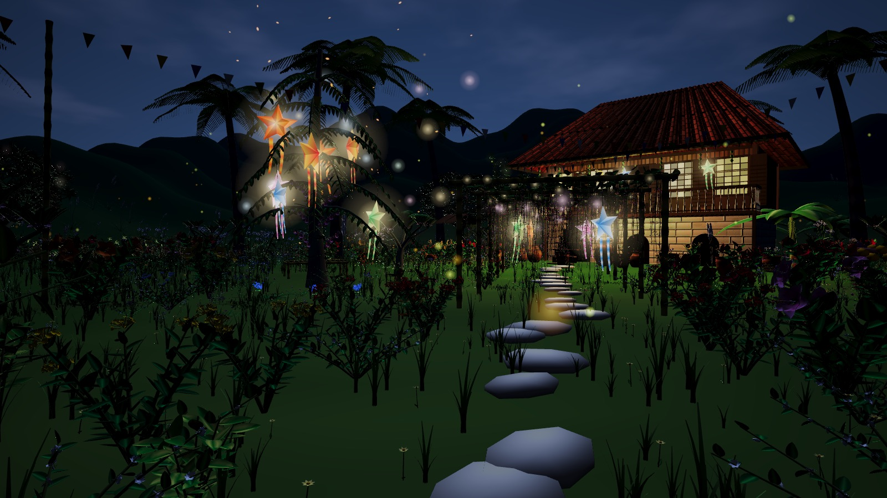
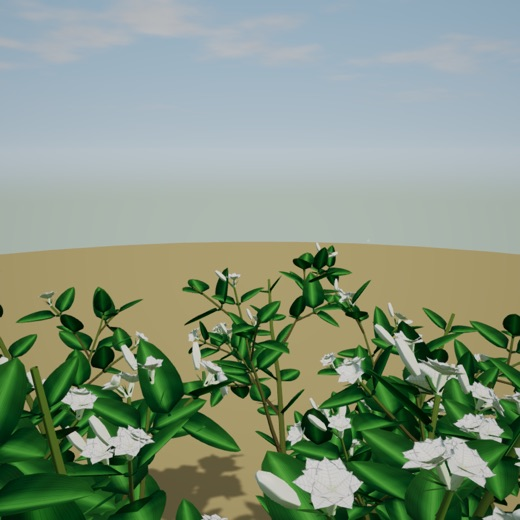
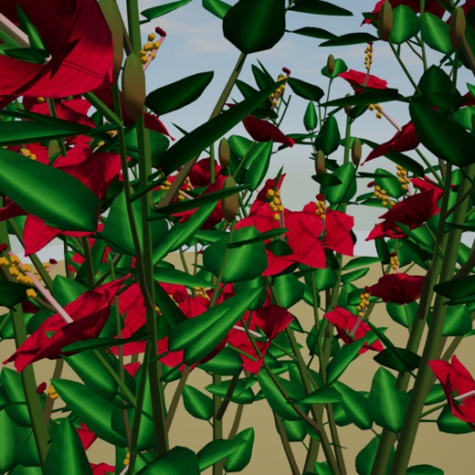
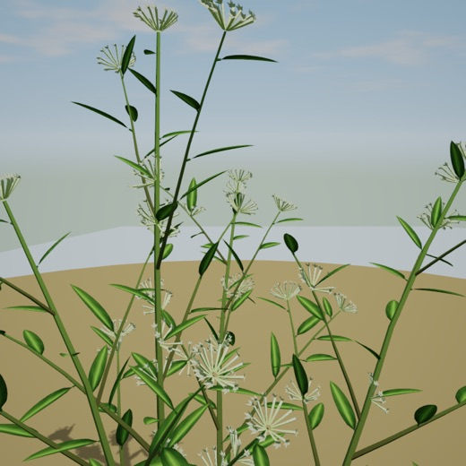
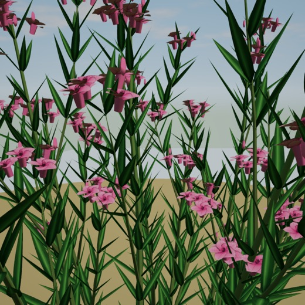

Knowledge that lives in a lola's memory
Cebuano plant names, folk uses and stories are rarely written down. They live with elders and healers (mananambal, herbolaryo) and are passed on by word of mouth.
Young Cebuanos see these flowers every day. Many do not know their names or what they were used for. Knowledge that is not passed on is lost.
Tuob · healing steam
Boil the leaves, breathe in the steam.
Palina · cleansing smoke
Burn dried herbs to cleanse a person or a house.
Hilot with lana
Massage with herbal oil, often with an orasyon said over it.
The knowledge is real, and it is fading
Healers of Cebu
Healers in Argao, Naga, San Fernando and San Remigio named 16 to 22 medicinal plants per town, mostly taken as decoctions (Miano et al., 2011).
Siquijor folk healing
Healers around Mt. Bandilaan shared their plant knowledge for the national record of traditional health knowledge (Siquijor State College, 2015).
Children know less
Children named fewer plants than their parents and grandparents. Asking children to interview their elders started new exchange between generations (Milani et al., 2025).
A word of caution
Some gaps between old and young come from changes in the land, not only from lost teaching (Hanazaki et al., 2013).
Learning from elders works best when the young take part in it. That is the role the player plays.
People look past plants
Overlooked by default
People notice animals more than plants and often see plants as background (Wandersee & Schussler, 1999).
Plant awareness disparity
A better name for the same problem, with four parts: attention, attitude, knowledge and interest (Parsley, 2020).
The game makes the player stop and look closely at each flower: its colour, its leaf, its scent, the hour it opens. Noticing is the core action.
We use "plant awareness disparity", not "plant blindness". Lola's loss of sight is treated with care and checked with people who have low vision.
Games can carry heritage and teach
Heritage games
Serious games raise cultural awareness and help people value heritage (Mortara et al., 2014; Anderson et al., 2010).
Intangible heritage
34 studies used games for oral traditions, crafts and social practices, mostly puzzle and adventure games (Zúñiga-Solórzano et al., 2025).
Learning gains
Digital games improve learning compared with usual teaching, more so when well designed (Clark et al., 2016; Wouters et al., 2013).
Filipino games
Games with Filipino stories, made by Filipinos for Filipinos, are still few (Cerda, 2021).
Learning by doing
Good games teach through action and discovery, not lists (Gee, 2003; Prensky, 2001).
Closest existing works
StuartXchange
Online list of Philippine medicinal plants and their folk uses (Stuart, n.d.).
PTKDL
National digital library of traditional health knowledge (UP Manila IHM, n.d.).
Botany Manor
Identify plants by collecting clues and deducing what they need (Balloon Studios, 2024).
Never Alone · Mulaka
Games built on Iñupiaq and Rarámuri stories (Upper One Games, 2014; Lienzo, 2018).
The facts exist as text. Games can carry oral tradition. No one has joined the two for Cebuano plants.
Three pieces that have not met
→keep the uses as text, apart from the place, the season and the person who taught them
→carry oral tradition, but not Cebuano plants or healing practice
→teach close looking, but with invented or foreign plants
Our opportunity: one 3D garden where players learn real Cebuano flowers, their uses and their stories by looking and working them out, as knowledge handed down by an elder.
Hardin ni Almira
A 3D garden game where players learn Cebuano plant knowledge by finding each flower, working out what it is, and passing it on
byPrincess Jaena Marie O. De La PeñaBS Computer Science · University of the Philippines Cebu
Lola Almira is losing her sight
She kept a journal with a poem and her knowledge for every flower in her garden. Now she cannot see well enough to finish it.
You are Ikaw, her apo. Find each flower, describe it to her, and finish the journal with her.
Based on Erlinda K. Alburo's Sinug-ang Hardin ni Almira, used with her permission.
“Ikaw na ang akong mata.”
You will be my eyes.
As her sight fades, the clues change: first sight, then scent and touch, then scent, sound and memory.
Her poems are the reward
When a page is solved, Lola recites the flower's poem. The player writes it into the journal next to her handwriting.
- Poems by Erlinda K. Alburo, used with her permission
- Each poem is shown in Cebuano with an English line beneath
- No new poems are written in her name
- Pages without one of her poems carry Lola's spoken knowledge instead
Pahina 1 · Sampaguita
[ Balak ni Erlinda K. Alburo ]
· · · · · · · · · · · · · · ·
· · · · · · · · · · · · ·
· · · · · · · · · · · · · · · ·
The poem text goes here exactly as she wrote it.
From a blank page to a remembered flower
Pahina 5 · ???
Ngalan: ?
Kanus-a: mobukad inig gabii
Gamit: ?
Mga timailhan · clues
- 📖 “I always know when it opens. Its perfume is for the ones who walk at night.”
- ❓ A lady who dresses up only when the sun goes down.
- 👃 Near the gate the air turns sweet after 7 pm.
- 🗣️ Nang Iday: “Smell it, day, don’t drink it.”
To build and evaluate Hardin ni Almira, a 3D web game for learning Cebuano plant knowledge.
Specifically, to:
- Build a 3D Cebuano seaside garden with 18 flowers, day and night, and living wind.
- Build the journal and deduction loop, including describing each flower to Lola.
- Gather and check the plant knowledge of each flower with cultural reviewers.
- Measure what players learn: names, uses and cautions.
- Measure how easy and enjoyable the game is to play.
- Measure how well it runs on a regular school laptop.
From the classroom to the community
Cebuano students
Learn the names, uses and cautions of flowers they see every day.
Teachers
A free tool for lessons on local culture, language and science.
Elders and healers
Their knowledge is recorded, checked and credited to them.
Developers
A reference for fast 3D web games: GPU wind, levels of detail, plants made from code.
Cultural workers
An example of telling oral tradition with respect in a game.
Future researchers
Can add more plants, towns, languages and stories.
What the study covers, and what it does not
Scope
- 18 flowers found in Cebuano gardens
- Cebuano first, English help below
- Plays in a web browser on a laptop, keyboard and mouse
- Folk uses from published sources, checked by cultural reviewers
- A prologue and 4 chapters, one per time of day
- Poems by Erlinda K. Alburo, with her permission
Limitations
- Folk uses are tradition, not medical advice (RA 8423)
- Knowledge from healers is used only with their consent and credit (RA 8371)
- Only the flowers and stories we build are covered
- Phones and tablets are not targeted
- Testing uses the devices and players we can reach
Research and development design
We build in rounds. Every round ends with a check by cultural reviewers.
Research
Published studies, talks with elders and healers, stories with named sources.
Design
Story, journal pages, clue types, chapters.
Build
Garden, flowers, Lola Almira, journal and loop in Babylon.js.
Review
Names, Cebuano lines and uses checked by reviewers.
Test
Learning, ease of play, enjoyment and speed.
Improve
Fix what testers and reviewers found. Repeat.
Runs in the browser, made from code
Babylon.js
3D engine: lights, shadows, levels of detail
JavaScript
Game logic, journal and story
GLSL shaders
Wind on every plant, sea waves
Plants from code
Stems, branches and leaves generated, not modelled by hand
Web Audio
Sea, wind, birds and footsteps made live
Python server
Runs the game locally, nothing to install
Git and GitHub
Version control
Vercel
Web hosting for play tests
Headless Chrome
Automatic screenshots and tests
When is a page solved?
Blanks
Filled from a word bank that grows with every clue: name, when or where, use.
D ∩ T
D is what the player tells Lola. T is what is true of the flower: colour, shape, scent, hour, place, leaf.
No losing
Fewer than 3 true details? Lola asks about one she is missing. That is the hint.
📖 Lola's page · ❓ Tigmo
What she wrote, and a Cebuano riddle.
👃 In the garden
Scent at night, colour, leaf, bees, place.
🗣️ Neighbours · 🌙 Sugilanon
How people use it, and stories at dusk.
One day in the garden, eighteen pages
Sumpa kita
Sampaguita. Learn the loop.
Ang nataran
Yard and house. 5 pages. Riddles.
Lim-aw ug baybayon
Pond and shore. 5 pages. Neighbours.
Tambal
Remedies. 4 pages. Adelfa teaches caution.
Mga sugilanon
Night stories. 3 pages. Find by scent.
Pagmata
The journal is read to Lola.
About 45 to 60 minutes. Free walk and the camera tour stay as they are. Full game flow and mockups ↗
The garden already grows




- 18 flowers with cards: Sa naandan and Nakat-unan
- Ikaw walks in first or third person; plants part around her
- Buntag to Gabii, wind on every plant, a living sea
- Hens, egret, butterflies, fireflies, live sound
- Bayong collection and the final awakening
- Lola Almira, journal, clues and word bank
- Describing to Lola, her poems, the chapters




How we will know it works
🎓 Learning
Do players remember names, uses and cautions?
Quiz on 6 to 8 flowers before and after playing. Score: g = (post − pre) / (max − pre) (Hake, 1998).
🙂 Ease and enjoyment
Is it easy and pleasant to play?
System Usability Scale (Brooke, 1996) and Game Experience Questionnaire (IJsselsteijn et al., 2013), plus open questions.
🧓 Accuracy and respect
Is the knowledge right, and told with care?
Elders, healers and cultural experts review names, Cebuano lines, uses and stories.
⚡ Speed and function
Does every feature work and run smoothly?
Each feature tested. Frame rate, load time and draw calls measured on a school laptop.
Hardin ni Almira puts Cebuano flowers, their uses, their stories and Ma'am Alburo's poems into a 3D garden. Knowledge that lived in one elder's memory is learned by playing and passed on.
Players:
Salamat!
“Ikaw na ang akong mata.”
Questions and suggestions are welcome
References
Alburo, E. K. (n.d.). Sinug-ang Hardin ni Almira. [Publication details to be added.]
Anderson, E. F., McLoughlin, L., Liarokapis, F., Peters, C., Petridis, P., & de Freitas, S. (2010). Developing serious games for cultural heritage: A state-of-the-art review. Virtual Reality, 14(4), 255–275. https://doi.org/10.1007/s10055-010-0177-3
Balloon Studios. (2024). Botany Manor [Video game]. Whitethorn Games.
Brooke, J. (1996). SUS: A “quick and dirty” usability scale. In P. W. Jordan, B. Thomas, B. A. Weerdmeester, & I. L. McClelland (Eds.), Usability evaluation in industry (pp. 189–194). Taylor & Francis.
Cerda, C. (2021). Towards a “Filipino” video game: Teaching Filipino culture and identity for video game development. Transactions of the Digital Games Research Association, 5(3). https://doi.org/10.26503/todigra.v5i3.122
Clark, D. B., Tanner-Smith, E. E., & Killingsworth, S. S. (2016). Digital games, design, and learning: A systematic review and meta-analysis. Review of Educational Research, 86(1), 79–122. https://doi.org/10.3102/0034654315582065
Gee, J. P. (2003). What video games have to teach us about learning and literacy. Palgrave Macmillan.
Hake, R. R. (1998). Interactive-engagement versus traditional methods: A six-thousand-student survey of mechanics test data for introductory physics courses. American Journal of Physics, 66(1), 64–74. https://doi.org/10.1119/1.18809
Hanazaki, N., Herbst, D. F., Marques, M. S., & Vandebroek, I. (2013). Evidence of the shifting baseline syndrome in ethnobotanical research. Journal of Ethnobiology and Ethnomedicine, 9, 75. https://doi.org/10.1186/1746-4269-9-75
IJsselsteijn, W. A., de Kort, Y. A. W., & Poels, K. (2013). The Game Experience Questionnaire. Technische Universiteit Eindhoven.
Institute of Herbal Medicine, University of the Philippines Manila. (n.d.). Philippine Traditional Knowledge Digital Library on Health. https://tkdlph.com
Lienzo. (2018). Mulaka [Video game]. Lienzo.
Miano, R. S., Picardal, J. P., Alonso, C. A. G., & Reuyan, D. (2011). Ethnobotanical inventory and assessment of medically-important plant roots in Cebu Island, Philippines. Asian Journal of Biodiversity, 2(1).
Milani, F., Bottoni, M., Maiellaro, A., Crisci, A., Bruschi, P., Giuliani, C., & Fico, G. (2025). Counteracting traditional knowledge erosion: An ethnobotanical survey in Valle Imagna (Bergamo, Italy) to foster intergenerational transfer. Plants, 14(22), 3477. https://doi.org/10.3390/plants14223477
Mortara, M., Catalano, C. E., Bellotti, F., Fiucci, G., Houry-Panchetti, M., & Petridis, P. (2014). Learning cultural heritage by serious games. Journal of Cultural Heritage, 15(3), 318–325. https://doi.org/10.1016/j.culher.2013.04.004
Parsley, K. M. (2020). Plant awareness disparity: A case for renaming plant blindness. Plants, People, Planet, 2(6), 598–601. https://doi.org/10.1002/ppp3.10153
Prensky, M. (2001). Digital game-based learning. McGraw-Hill.
Republic Act No. 8371. (1997). The Indigenous Peoples' Rights Act of 1997. Republic of the Philippines.
Republic Act No. 8423. (1997). Traditional and Alternative Medicine Act of 1997. Republic of the Philippines.
Siquijor State College. (2015). Folk healing practices of Siquijor Island [Terminal report]. Philippine Traditional Knowledge Digital Library on Health. https://tkdlph.com
Stuart, G. U., Jr. (n.d.). Philippine medicinal plants. StuartXchange. http://www.stuartxchange.org
Upper One Games & E-Line Media. (2014). Never Alone (Kisima Ingitchuna) [Video game]. E-Line Media.
Wandersee, J. H., & Schussler, E. E. (1999). Preventing plant blindness. The American Biology Teacher, 61(2), 82–86. https://doi.org/10.2307/4450624
Wouters, P., van Nimwegen, C., van Oostendorp, H., & van der Spek, E. D. (2013). A meta-analysis of the cognitive and motivational effects of serious games. Journal of Educational Psychology, 105(2), 249–265. https://doi.org/10.1037/a0031311
Zúñiga-Solórzano, M. E., Fabregat, R., & Jové, T. (2025). Characterization of games technologies for learning in the context of intangible cultural heritage. In Digital Heritage 2025. Eurographics Association. https://doi.org/10.2312/dh.20253377